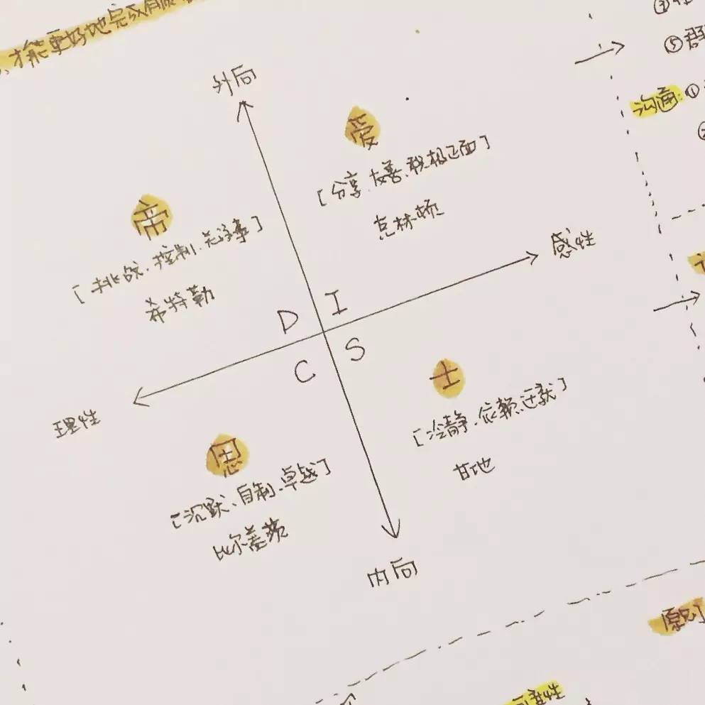
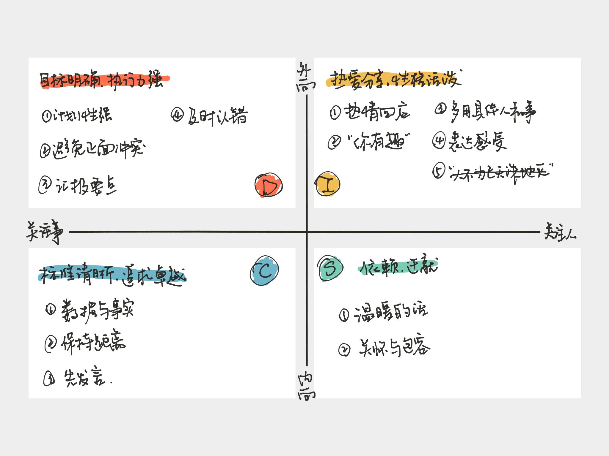

<!DOCTYPE html><html lang="en"><head><meta charset="utf-8"><title>DISC 行为风格理论 | Zthxxx&#39;s Wiki</title><meta name="keywords" content="生活学习,DISC"><meta name="viewport" content="width=device-width,initial-scale=1,maximum-scale=1"><meta name="description" content="什么是 DISCDISC 是一种行为风格理论，它将人的行为通过四个维度来解释。现代 DISC 是由美国心理学家威廉·莫尔顿·马斯顿博士（Dr. William Moulton Marston）在二十世纪二十年代提出的理论基础发展和延伸来的。DISC 四个字母各表示一个维度，其具体解释各家略有差别。四个属性简单概括如下：   D : Dominance /  Director , 老板型 / 指挥者"><meta name="keywords" content="生活学习,DISC"><meta property="og:type" content="article"><meta property="og:title" content="DISC 行为风格理论"><meta property="og:url" content="http://wiki.zthxxx.me/wiki/生活学习/DISC-行为风格理论/index.html"><meta property="og:site_name" content="Zthxxx&#39;s Wiki"><meta property="og:description" content="什么是 DISCDISC 是一种行为风格理论，它将人的行为通过四个维度来解释。现代 DISC 是由美国心理学家威廉·莫尔顿·马斯顿博士（Dr. William Moulton Marston）在二十世纪二十年代提出的理论基础发展和延伸来的。DISC 四个字母各表示一个维度，其具体解释各家略有差别。四个属性简单概括如下：   D : Dominance /  Director , 老板型 / 指挥者"><meta property="og:locale" content="en"><meta property="og:image" content="http://wiki.zthxxx.me/wiki/生活学习/DISC-行为风格理论/帝爱士思（DISC）概览-曹将.jpg"><meta property="og:image" content="http://wiki.zthxxx.me/wiki/生活学习/DISC-行为风格理论/DISC属性表-曹将.jpg"><meta property="og:updated_time" content="2018-04-01T03:04:14.149Z"><meta name="twitter:card" content="summary"><meta name="twitter:title" content="DISC 行为风格理论"><meta name="twitter:description" content="什么是 DISCDISC 是一种行为风格理论，它将人的行为通过四个维度来解释。现代 DISC 是由美国心理学家威廉·莫尔顿·马斯顿博士（Dr. William Moulton Marston）在二十世纪二十年代提出的理论基础发展和延伸来的。DISC 四个字母各表示一个维度，其具体解释各家略有差别。四个属性简单概括如下：   D : Dominance /  Director , 老板型 / 指挥者"><meta name="twitter:image" content="http://wiki.zthxxx.me/wiki/生活学习/DISC-行为风格理论/帝爱士思（DISC）概览-曹将.jpg"><link rel="alternate" href="/atom.xml" title="Zthxxx&#39;s Wiki" type="application/atom+xml"><link rel="icon" href="/favicon.ico"><link rel="stylesheet" href="/libs/font-awesome/css/font-awesome.min.css"><link rel="stylesheet" href="/libs/open-sans/styles.css"><link rel="stylesheet" href="/libs/source-code-pro/styles.css"><link rel="stylesheet" href="/css/style.css"><script src="/libs/jquery/2.1.3/jquery.min.js"></script><script src="/libs/jquery/plugins/cookie/1.4.1/jquery.cookie.js"></script><link rel="stylesheet" href="/libs/lightgallery/css/lightgallery.min.css"><link rel="stylesheet" href="/libs/justified-gallery/justifiedGallery.min.css"><script async src="//dn-lbstatics.qbox.me/busuanzi/2.3/busuanzi.pure.mini.js"></script></head></html><body><div id="container"><header id="header"><div id="header-main" class="header-inner"><div class="outer"><a href="/" id="logo"><i class="logo"></i> <span class="site-title">Zthxxx&#39;s Wiki</span></a><nav id="main-nav"> <a class="main-nav-link" href="/">首页</a> <a class="main-nav-link" href="/archives">归档</a> <a class="main-nav-link" href="/categories">分类</a> <a class="main-nav-link" href="/tags">标签</a> <a class="main-nav-link" href="/about">关于</a></nav><div id="search-form-wrap"><form class="search-form"> <input type="text" class="ins-search-input search-form-input" placeholder="Search"> <button type="submit" class="search-form-submit"></button></form><div class="ins-search"><div class="ins-search-mask"></div><div class="ins-search-container"><div class="ins-input-wrapper"> <input type="text" class="ins-search-input" placeholder="Type something..."><span class="ins-close ins-selectable"><i class="fa fa-times-circle"></i></span></div><div class="ins-section-wrapper"><div class="ins-section-container"></div></div></div></div><script>window.INSIGHT_CONFIG={TRANSLATION:{POSTS:"Posts",PAGES:"Pages",CATEGORIES:"Categories",TAGS:"Tags",UNTITLED:"(Untitled)"},ROOT_URL:"/",CONTENT_URL:"/content.json"}</script><script src="/js/insight.js"></script></div></div></div><div id="main-nav-mobile" class="header-sub header-inner"><table class="menu outer"><tr><td><a class="main-nav-link" href="/">首页</a></td><td><a class="main-nav-link" href="/archives">归档</a></td><td><a class="main-nav-link" href="/categories">分类</a></td><td><a class="main-nav-link" href="/tags">标签</a></td><td><a class="main-nav-link" href="/about">关于</a></td><td><div class="search-form"> <input type="text" class="ins-search-input search-form-input" placeholder="Search"></div></td></tr></table></div></header><div class="outer"><aside id="sidebar"><div class="widget-wrap" id="categories"><h3 class="widget-title"> <span>categories</span> &nbsp;<a id="allExpand" href="#"><i class="fa fa-angle-double-down fa-2x"></i></a></h3><ul class="unstyled" id="tree"><li class="directory"><a href="#" data-role="directory"><i class="fa fa-folder"></i> &nbsp; 技术开发</a><ul class="unstyled" id="tree"><li class="directory"><a href="#" data-role="directory"><i class="fa fa-folder"></i> &nbsp; Git</a><ul class="unstyled" id="tree"><li class="file"><a href="/wiki/技术开发/Git/Git-commit-message-基本规范/">Git commit message 基本规范</a></li><li class="file"><a href="/wiki/技术开发/Git/Git-清理已追踪或未添加追踪的文件/">Git 清理已追踪或未添加追踪的文件</a></li></ul></li><li class="directory"><a href="#" data-role="directory"><i class="fa fa-folder"></i> &nbsp; Linux</a><ul class="unstyled" id="tree"><li class="directory"><a href="#" data-role="directory"><i class="fa fa-folder"></i> &nbsp; Shell</a><ul class="unstyled" id="tree"><li class="file"><a href="/wiki/技术开发/Linux/Shell/awk-管道操作小结/">awk 管道操作小结</a></li></ul></li><li class="directory"><a href="#" data-role="directory"><i class="fa fa-folder"></i> &nbsp; Ubuntu</a><ul class="unstyled" id="tree"><li class="file"><a href="/wiki/技术开发/Linux/Ubuntu/Ubuntu-16-开机默认命令行界面/">Ubuntu 16.04 开机默认命令行界面</a></li></ul></li><li class="directory"><a href="#" data-role="directory"><i class="fa fa-folder"></i> &nbsp; Vim</a><ul class="unstyled" id="tree"><li class="file"><a href="/wiki/技术开发/Linux/Vim/Vim-粘贴模式/">Vim 粘贴模式</a></li></ul></li><li class="file"><a href="/wiki/技术开发/Linux/Linux-命令控制屏幕/">Linux 命令控制屏幕</a></li></ul></li><li class="directory"><a href="#" data-role="directory"><i class="fa fa-folder"></i> &nbsp; 前端</a><ul class="unstyled" id="tree"><li class="file"><a href="/wiki/技术开发/前端/Selenium-中使用-Chrome-路径问题/">Selenium 中使用 Chrome 路径问题</a></li><li class="file"><a href="/wiki/技术开发/前端/Webpack-中-css-import-使用-alias-相对路径/">Webpack 中 css import 使用 alias 相对路径</a></li><li class="file"><a href="/wiki/技术开发/前端/gulp-imagemin-使用与参数设置/">gulp-imagemin 使用与参数设置</a></li></ul></li><li class="directory"><a href="#" data-role="directory"><i class="fa fa-folder"></i> &nbsp; 架构</a><ul class="unstyled" id="tree"><li class="file"><a href="/wiki/技术开发/架构/IaaS-PaaS-SaaS-概念/">IaaS, PaaS, SaaS 概念</a></li></ul></li><li class="directory"><a href="#" data-role="directory"><i class="fa fa-folder"></i> &nbsp; 算法</a><ul class="unstyled" id="tree"><li class="file"><a href="/wiki/技术开发/算法/八大排序算法复杂度/">八大排序算法复杂度</a></li></ul></li><li class="directory"><a href="#" data-role="directory"><i class="fa fa-folder"></i> &nbsp; 软件工程</a><ul class="unstyled" id="tree"><li class="file"><a href="/wiki/技术开发/软件工程/GitHub团队任务管理流程/">GitHub 团队任务管理流程</a></li><li class="file"><a href="/wiki/技术开发/软件工程/语义化版本号-2-0-0/">语义化版本号 2.0.0</a></li></ul></li></ul></li><li class="directory open"><a href="#" data-role="directory"><i class="fa fa-folder-open"></i> &nbsp; 生活学习</a><ul class="unstyled" id="tree"><li class="file active"><a href="/wiki/生活学习/DISC-行为风格理论/">DISC 行为风格理论</a></li><li class="file"><a href="/wiki/生活学习/点滴人生观念信条/">点滴人生观念信条</a></li><li class="file"><a href="/wiki/生活学习/马斯洛需求层次理论/">马斯洛需求层次理论</a></li></ul></li><li class="directory"><a href="#" data-role="directory"><i class="fa fa-folder"></i> &nbsp; 程序语言</a><ul class="unstyled" id="tree"><li class="directory"><a href="#" data-role="directory"><i class="fa fa-folder"></i> &nbsp; CSS</a><ul class="unstyled" id="tree"><li class="file"><a href="/wiki/程序语言/CSS/CSS 属性声明顺序规范/">CSS 属性声明顺序规范</a></li></ul></li><li class="directory"><a href="#" data-role="directory"><i class="fa fa-folder"></i> &nbsp; Java</a><ul class="unstyled" id="tree"><li class="file"><a href="/wiki/程序语言/Java/Java-访问控制符/">Java 访问控制符</a></li></ul></li></ul></li><li class="directory"><a href="#" data-role="directory"><i class="fa fa-folder"></i> &nbsp; 艺术</a><ul class="unstyled" id="tree"><li class="directory"><a href="#" data-role="directory"><i class="fa fa-folder"></i> &nbsp; 平面设计</a><ul class="unstyled" id="tree"><li class="file"><a href="/wiki/艺术/平面设计/平面设计入门导图/">平面设计入门导图</a></li></ul></li></ul></li><li class="directory"><a href="#" data-role="directory"><i class="fa fa-folder"></i> &nbsp; 计算机基础知识</a><ul class="unstyled" id="tree"><li class="directory"><a href="#" data-role="directory"><i class="fa fa-folder"></i> &nbsp; 图形图像</a><ul class="unstyled" id="tree"><li class="file"><a href="/wiki/计算机基础知识/图形图像/曲线调整工具/">曲线调整工具与直方图</a></li><li class="file"><a href="/wiki/计算机基础知识/图形图像/渐进式-JPEG-格式/">渐进式 JPEG 格式</a></li></ul></li><li class="file"><a href="/wiki/计算机基础知识/Windows系统入门操作导图/">Windows 系统入门操作导图</a></li><li class="file"><a href="/wiki/计算机基础知识/字符集与字符编码/">字符集与字符编码</a></li></ul></li><li class="file"><a href="/wiki/index/">Welcome Zthxxx's Wiki Site</a></li></ul></div><script>$(document).ready(function(){var r="fa-folder-open",i="fa-folder",l="fa-angle-double-down",d="fa-angle-double-up";$(document).on("click",'#categories a[data-role="directory"]',function(a){a.preventDefault();var e=$(this).children(".fa"),s=e.hasClass(r),l=$(this).siblings("ul");e.removeClass(r).removeClass(i),s?(void 0!==l&&l.slideUp({duration:100}),e.addClass(i)):(void 0!==l&&l.slideDown({duration:100}),e.addClass(r))}),$('#categories a[data-role="directory"]').bind("contextmenu",function(a){a.preventDefault();var e=$(this).children(".fa"),s=e.hasClass(r),l=$(this).siblings("ul"),d=$.merge(l.find("li ul"),l),o=$.merge(l.find(".fa"),e);o.removeClass(r).removeClass(i),s?(d.slideUp({duration:100}),o.addClass(i)):(d.slideDown({duration:100}),o.addClass(r))}),$(document).on("click","#allExpand",function(a){a.preventDefault();var e=$(this).children(".fa"),s=e.hasClass(l);e.removeClass(l).removeClass(d),s?($("#sidebar .fa.fa-folder").removeClass("fa-folder").addClass("fa-folder-open"),$("#categories li ul").slideDown({duration:100}),e.addClass(d)):($("#sidebar .fa.fa-folder-open").removeClass("fa-folder-open").addClass("fa-folder"),$("#categories li ul").slideUp({duration:100}),e.addClass(l))})})</script><div id="toTop" class="fa fa-angle-up"></div></aside><section id="main"><article id="post-生活学习/DISC-行为风格理论" class="article article-type-post" itemscope="" itemprop="blogPost"><div class="article-inner"><header class="article-header"><div class="article-meta"><div class="article-category"><i class="fa fa-folder"></i> <a class="article-category-link" href="/categories/生活学习/">生活学习</a></div><div class="article-tag"><i class="fa fa-tag"></i> <a class="tag-link" href="/tags/DISC/">DISC</a>, <a class="tag-link" href="/tags/生活学习/">生活学习</a></div><div class="article-date"><i class="fa fa-calendar"></i> <a href="/wiki/生活学习/DISC-行为风格理论/"><time datetime="2017-02-16T04:56:24.000Z" itemprop="datePublished">2017-02-16</time></a></div><i class="fa fa-bar-chart"></i><span id="busuanzi_container_site_pv"><span id="busuanzi_value_page_pv"></span></span><div class="article-meta-button"> <a href="https://github.com/zthxxx/Wiki-site/raw/writing/source/_posts/生活学习/DISC-行为风格理论.md" rel="external nofollow noopener noreferrer" target="_blank">Source</a></div><div class="article-meta-button"> <a href="https://github.com/zthxxx/Wiki-site/edit/writing/source/_posts/生活学习/DISC-行为风格理论.md" rel="external nofollow noopener noreferrer" target="_blank">Edit</a></div><div class="article-meta-button"> <a href="https://github.com/zthxxx/Wiki-site/commits/writing/source/_posts/生活学习/DISC-行为风格理论.md" rel="external nofollow noopener noreferrer" target="_blank">History</a></div></div><h1 class="article-title" itemprop="name"> DISC 行为风格理论</h1></header><div class="article-entry" itemprop="articleBody"><div id="toc" class="toc-article"> <strong class="toc-title">Catalogue</strong><ol class="toc"><li class="toc-item toc-level-2"><a class="toc-link" href="#什么是-DISC"><span class="toc-number">1.</span> <span class="toc-text">什么是 DISC</span></a></li><li class="toc-item toc-level-2"><a class="toc-link" href="#DISC-有什么作用"><span class="toc-number">2.</span> <span class="toc-text">DISC 有什么作用</span></a></li><li class="toc-item toc-level-2"><a class="toc-link" href="#如何分析人的-DISC-属性"><span class="toc-number">3.</span> <span class="toc-text">如何分析人的 DISC 属性</span></a><ol class="toc-child"><li class="toc-item toc-level-3"><a class="toc-link" href="#D-属性"><span class="toc-number">3.1.</span> <span class="toc-text">D 属性</span></a></li><li class="toc-item toc-level-3"><a class="toc-link" href="#I-属性"><span class="toc-number">3.2.</span> <span class="toc-text">I 属性</span></a></li><li class="toc-item toc-level-3"><a class="toc-link" href="#S-属性"><span class="toc-number">3.3.</span> <span class="toc-text">S 属性</span></a></li><li class="toc-item toc-level-3"><a class="toc-link" href="#C-属性"><span class="toc-number">3.4.</span> <span class="toc-text">C 属性</span></a></li></ol></li><li class="toc-item toc-level-2"><a class="toc-link" href="#场景举例"><span class="toc-number">4.</span> <span class="toc-text">场景举例</span></a><ol class="toc-child"><li class="toc-item toc-level-3"><a class="toc-link" href="#D-属性-1"><span class="toc-number">4.1.</span> <span class="toc-text">D 属性</span></a></li><li class="toc-item toc-level-3"><a class="toc-link" href="#I-属性-1"><span class="toc-number">4.2.</span> <span class="toc-text">I 属性</span></a></li><li class="toc-item toc-level-3"><a class="toc-link" href="#S-属性-1"><span class="toc-number">4.3.</span> <span class="toc-text">S 属性</span></a></li><li class="toc-item toc-level-3"><a class="toc-link" href="#C-属性-1"><span class="toc-number">4.4.</span> <span class="toc-text">C 属性</span></a></li></ol></li><li class="toc-item toc-level-2"><a class="toc-link" href="#参考资料"><span class="toc-number">5.</span> <span class="toc-text">参考资料</span></a></li></ol></div><h2 id="什么是-DISC"><a href="#什么是-DISC" class="headerlink" title="什么是 DISC"></a>什么是 DISC</h2><p>DISC 是一种行为风格理论，它将人的行为通过四个维度来解释。现代 DISC 是由美国心理学家威廉·莫尔顿·马斯顿博士（Dr. William Moulton Marston）在二十世纪二十年代提出的理论基础发展和延伸来的。DISC 四个字母各表示一个维度，其具体解释各家略有差别。四个属性简单概括如下：</p><blockquote><ul><li><strong>D : Dominance / Director , 老板型 / 指挥者，表现为目标明确、执行力强。</strong></li><li><strong>I : Influence / Interact , 互动型 / 社交者，表现为热爱分享、性格活泼。</strong></li><li><strong>S : Steadiness / Supporter , 支持型 / 支持者，表现为对人依赖和迁就。</strong></li><li><strong>C : Corrector / Compliance , 修正型 / 思考者，现为标准清晰、追求卓越。</strong></li></ul></blockquote><p></p><p>DISC 是对人行为、情绪、性格的归纳，既可以说某人是 D 类型的性格，也可以说某人这个行为偏 D 属性。每个人都有 DISC 方面的四个属性，只是偏向性不同，是行为风格的一种特点，每种熟悉之间没有好坏之分，并且可以易于通过训练改变偏向的属性特质。</p><p>DISC 理论中既包括每个属性都有哪些特质，也包括每种属性的人心里对人对事的期望，和如何正确对各种属性的人打交道。</p><h2 id="DISC-有什么作用"><a href="#DISC-有什么作用" class="headerlink" title="DISC 有什么作用"></a>DISC 有什么作用</h2><p>因为 DISC 跟人性格的强相关性，最常见的使用就是通过 DISC 理论分析周围人的性格属性，采用适用的沟通方式减少交流障碍与矛盾；很多时候你在人群中不受欢迎，是因为没有采取对味的谈话方式给不同 DISC 属性的人。</p><p>延伸上讲，DISC 覆盖的范围就很广了；</p><p>与人力资源挂钩，企业管理通过了解职员的特性，进而分配合适的任务，放对人才位置提升人力效率；</p><p>与自我分析挂钩，细致分析自我的 DISC 属性偏向再回顾过去，能很容易解释以往做错事的原因，这时总结自己 DISC 属性方面的缺失，能够预测自己在遇到某类问题时容易犯什么错，针对性的训练自己某个缺失的属性，完善和规整自身行为。</p><p>与演讲演示挂钩，通过 DISC 分析现场观众成分，调整演讲者说话内容的属性，帮助调动现场氛围，更吸引人。</p><p>与对话谈判挂钩，分析对手缺失的属性，判断对手到底是吃哪套的人，直击谈判痛点，反转局势。</p><p>与人生规划挂钩，了解自己，才能给自己规划合适的方向，不断调整、学习和发展。</p><p>DISC 的应用非常之多，是涵盖社区交往多数场合的常用技能。</p><h2 id="如何分析人的-DISC-属性"><a href="#如何分析人的-DISC-属性" class="headerlink" title="如何分析人的 DISC 属性"></a>如何分析人的 DISC 属性</h2><p>上面有简单介绍 DISC 属性的特质，这里也先放上一张总结性的属性表。</p><p></p><p>企业中常用的识别方式是通过让职员使用网页或软件做 DISC 测评，通过软件分析得出员工属性偏向；</p><p>日常生活中肯定是没办法让你身边的每个人都做一套测评题的，但是我们也可以通过观察他人的言行，说话风格做事风格，来简单分析某个人处于这个场景中更偏向哪种属性。相处方法符合“同性相吸”，即他是什么特质的人，你就按那个特质的行为方式来回应他，一般都会让他满意，两方相处都舒服。</p><h3 id="D-属性"><a href="#D-属性" class="headerlink" title="D 属性"></a>D 属性</h3><p>属性特质：</p><ul><li>关注事情发展</li><li>能力强，态度偏强势，自主积极推动事情</li><li>目标坚定，认定的事情不容易改</li><li>喜欢定计划，追求办事效率</li><li>做事不留情面（不会照顾感情）</li><li>常见于老板领导特质</li></ul><p>沟通要点：</p><blockquote><p><strong>第一，计划性要强</strong></p><p><strong>第二，避免正面争论</strong></p><p><strong>第三，汇报要点</strong></p><p><strong>第四，如果做错了，及时承认</strong></p><p>考虑使用“三点汇报法”</p><blockquote><ul><li><strong>最重要的是什么</strong></li><li><strong>最紧急的是什么</strong></li><li><strong>列完整清单</strong></li></ul></blockquote></blockquote><h3 id="I-属性"><a href="#I-属性" class="headerlink" title="I 属性"></a>I 属性</h3><p>属性特质：</p><ul><li>关注人的情绪变化</li><li>喜欢与人交谈而不是刻板做事</li><li>社交主动，乐于分享</li><li>喜欢听故事讲故事，善于描述细节，喜欢夸张性的形容词</li><li>回应人热情、积极及时</li><li>常见于社交达人特质</li></ul><p>沟通要点：</p><blockquote><p><strong>第一，热情回应</strong></p><p><strong>第二，告诉他“你有趣”</strong></p><p><strong>第三，多用具体的人和事来表达</strong></p><p><strong>第四，多表达感受</strong></p><p><strong>第五，不要跟他们谈“人不为己天诛地灭”</strong></p></blockquote><h3 id="S-属性"><a href="#S-属性" class="headerlink" title="S 属性"></a>S 属性</h3><p>属性特质：</p><ul><li>随和，中庸，没有棱角</li><li>比较关注人的行为</li><li>喜欢在后面支持帮助他人，不善于正面出风头</li><li>服从安排</li><li>喜欢和平，害怕冲突矛盾</li><li>话不多说，做事稳健，不会急躁，谨言慎行</li><li>长久保持一致，固有原则，不喜欢改变</li></ul><p>沟通要点：</p><blockquote><p><strong>第一，多说一两句温暖和肯定的话</strong></p><p><strong>第二，多一些关怀和包容</strong></p><p><strong>第三，多一些指导给出规划</strong></p></blockquote><h3 id="C-属性"><a href="#C-属性" class="headerlink" title="C 属性"></a>C 属性</h3><p>属性特质：</p><ul><li>关注事情方向的把控</li><li>喜欢标准化，善于分析规则</li><li>总跟他人摆事实讲道理</li><li>先思考后做事情</li><li>喜欢简洁（外观和流程）</li><li>喜欢定计划，按步就搬，也要求别人要守规矩</li><li>追求完美卓越，对人对事要求高</li><li>情感内敛，有话直说，按规矩办事而不受感情影响</li><li>表情严肃，给人一定不易接近的距离感</li></ul><p>沟通要点：</p><blockquote><p><strong>第一，用数据和事实说话</strong></p><p><strong>第二，保持距离，不用套近乎</strong></p><p><strong>第三，让他们先发言</strong></p><p><strong>第四，有话直说但一定要符合逻辑</strong></p></blockquote><h2 id="场景举例"><a href="#场景举例" class="headerlink" title="场景举例"></a>场景举例</h2><h3 id="D-属性-1"><a href="#D-属性-1" class="headerlink" title="D 属性"></a>D 属性</h3><blockquote><p>这个项目已经进展到核心环节，目前最重要的是做尽职调查，完善财务数据；<strong>（最重要的是什么）</strong></p><p>当前最紧急的事是跟对方领导沟通，安排一次碰头会；<strong>（最紧急的是什么）</strong></p><p>其他相关的进度在这张表上，我马上发送到您的邮箱，有任何问题可以随时联系我。<strong>（完整清单）</strong></p></blockquote><h3 id="I-属性-1"><a href="#I-属性-1" class="headerlink" title="I 属性"></a>I 属性</h3><blockquote><p>I：“我发现有个新的APP，真的超有用，你看看……”</p><p>“恩，真的哎！我马上去下！”<strong>（及时热情反馈）</strong></p></blockquote><h3 id="S-属性-1"><a href="#S-属性-1" class="headerlink" title="S 属性"></a>S 属性</h3><blockquote><p>“我记得琶醍有家餐馆不错，晚上一起去吃吧，不要说拒绝哦！”（<strong>有安排，并表现照顾</strong>）</p></blockquote><h3 id="C-属性-1"><a href="#C-属性-1" class="headerlink" title="C 属性"></a>C 属性</h3><p>直接陈述道理和事实即可。</p><p>　</p><h2 id="参考资料"><a href="#参考资料" class="headerlink" title="参考资料"></a>参考资料</h2><blockquote><ul><li><a href="http://www.360doc.com/content/15/1128/13/29381376_516480684.shtml" rel="external nofollow noopener noreferrer" target="_blank">李海峰说DISC</a></li><li><a href="http://news.ifeng.com/a/20150801/44323996_0.shtml" rel="external nofollow noopener noreferrer" target="_blank">李海峰：DISC帮领导者巧用人用对人</a></li><li><a href="http://mp.weixin.qq.com/s?__biz=MzA5NTEzNzgyMA==&amp;mid=2654788521&amp;idx=1&amp;sn=6f8caa056e390ad4a0a7f63bfc3ef991&amp;mpshare=1&amp;scene=1&amp;srcid=0213JhDvOOXxbMigcV9FWtB7#rd" rel="external nofollow noopener noreferrer" target="_blank">曹将：DISC 分析简述 | 微信</a></li><li><a href="http://mp.weixin.qq.com/s?__biz=MzA5NTEzNzgyMA==&amp;mid=2654788702&amp;idx=1&amp;sn=757e28dd6f732972d46a0a093ff92948&amp;chksm=8b8b852dbcfc0c3b78b450bc74e184063b771e264bb9ea018379992d369b6b772c49c06b7c5b&amp;mpshare=1&amp;scene=1&amp;srcid=02144CfC79EMwui2JkUJReAq#rd" rel="external nofollow noopener noreferrer" target="_blank">曹将：DISC 与人际沟通 | 微信</a></li></ul></blockquote></div><footer class="article-footer"></footer></div></article><nav id="article-nav"> <a href="/wiki/生活学习/点滴人生观念信条/" id="article-nav-newer" class="article-nav-link-wrap"><strong class="article-nav-caption">Newer</strong><div class="article-nav-title"> 点滴人生观念信条</div></a> <a href="/wiki/生活学习/马斯洛需求层次理论/" id="article-nav-older" class="article-nav-link-wrap"><strong class="article-nav-caption">Older</strong><div class="article-nav-title">马斯洛需求层次理论</div></a></nav><script type="text/javascript">!function(){var e=window.location.href,r=document.referrer;if(!/([http|https]:\/\/[a-zA-Z0-9\_\.]+\.baidu\.com)/gi.test(e)){var o="//api.share.baidu.com/s.gif";r?(o+="?r="+encodeURIComponent(document.referrer),e&&(o+="&l="+e)):e&&(o+="?l="+e),(new Image).src=o}}(window)</script></section></div><footer id="footer"><div class="outer"><div id="footer-info" class="inner"> zthxxx &copy; 2018 <a rel="external nofollow noopener noreferrer" href="http://creativecommons.org/licenses/by-nc-nd/4.0/" target="_blank"></a><br> Powered by <a href="http://hexo.io/" target="_blank" rel="external nofollow noopener noreferrer">Hexo</a>. Theme - <a href="https://github.com/zthxxx/hexo-theme-Wikitten" rel="external nofollow noopener noreferrer" target="_blank">wikitten</a><br><span id="busuanzi_container_site_pv"><i class="fa fa-eye"></i><span id="busuanzi_value_site_pv"></span></span> |<span id="busuanzi_container_site_pv"><i class="fa fa-user"><span id="busuanzi_value_site_uv"></span></i></span></div></div></footer><script src="/libs/lightgallery/js/lightgallery.min.js"></script><script src="/libs/lightgallery/js/lg-thumbnail.min.js"></script><script src="/libs/lightgallery/js/lg-pager.min.js"></script><script src="/libs/lightgallery/js/lg-autoplay.min.js"></script><script src="/libs/lightgallery/js/lg-fullscreen.min.js"></script><script src="/libs/lightgallery/js/lg-zoom.min.js"></script><script src="/libs/lightgallery/js/lg-hash.min.js"></script><script src="/libs/lightgallery/js/lg-share.min.js"></script><script src="/libs/lightgallery/js/lg-video.min.js"></script><script src="/libs/justified-gallery/jquery.justifiedGallery.min.js"></script><script type="text/x-mathjax-config">
    MathJax.Hub.Config({
        tex2jax: {
            inlineMath: [ ["$","$"], ["\\(","\\)"] ],
            skipTags: ['script', 'noscript', 'style', 'textarea', 'pre', 'code'],
            processEscapes: true,
            TeX: {
                equationNumbers: {
                  autoNumber: 'AMS'
                }
            }
        }
    });
    MathJax.Hub.Queue(function() {
        var all = MathJax.Hub.getAllJax();
        for (var i = 0; i < all.length; ++i)
            all[i].SourceElement().parentNode.className += ' has-jax';
    });
</script><script async src="//cdnjs.cloudflare.com/ajax/libs/mathjax/2.7.1/MathJax.js?config=TeX-AMS-MML_HTMLorMML"></script><script src="/js/main.js"></script></div></body>